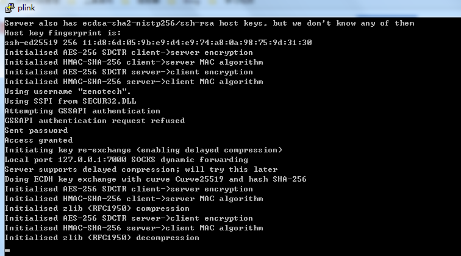
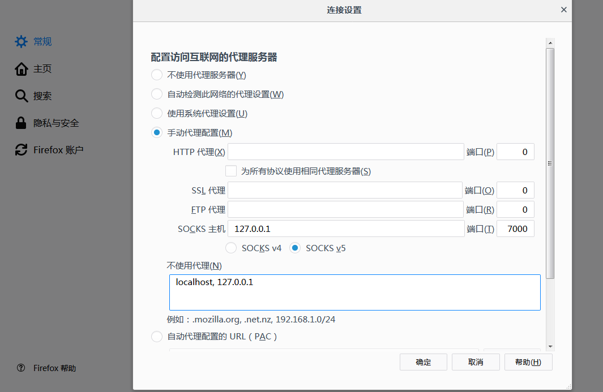
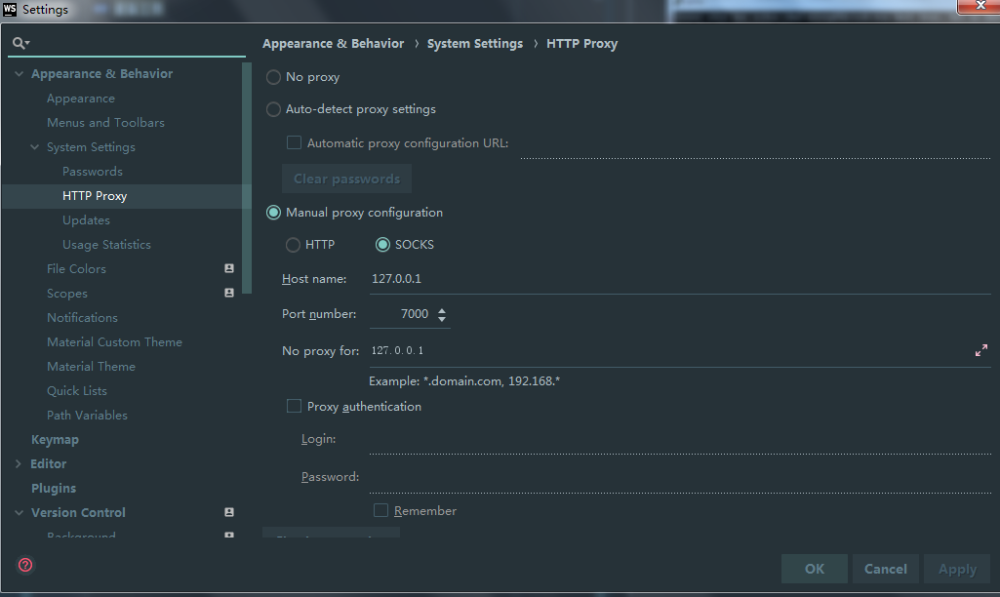

代理服务方案
代理服务器设置
准备工作
- 国外虚拟主机：我用的老薛主机一年40元需要开通ssh权限。
- putty：本文利用ssh的端口转发实现socket5代理。
- plink：putty包下面的一个工具。
- Firefox浏览器：设置浏览器的代理服务器用于浏览被墙网站。
- webstorm：配置webstorm用于下载插件。
配置
为plink.exe新建一个一个快捷方式，然后加入以下参数：
1 | plink.exe -v -C -N -D 127.0.0.1:7000 -l root -pw password -P 22 xxx.xxx.xxx.xxx |
plink.exe -显示详细信息
-启用数据压缩
-不显示shell
-端口动态转发 代理IP:端口
-l 远程主机用户名
-pw 自动输入用户密码
-P 远程主机端口 远程主机IP
启动成功显示：

1. 浏览器配置：

2. webstorm配置：
